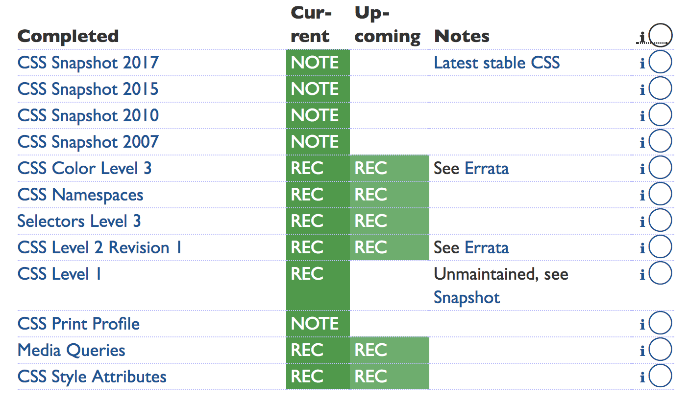
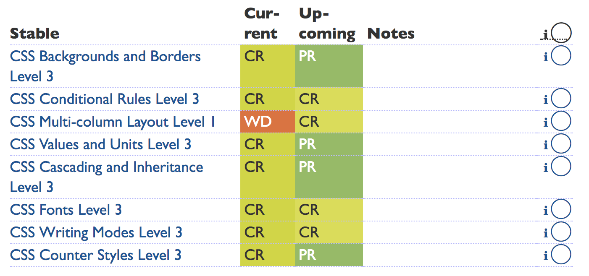
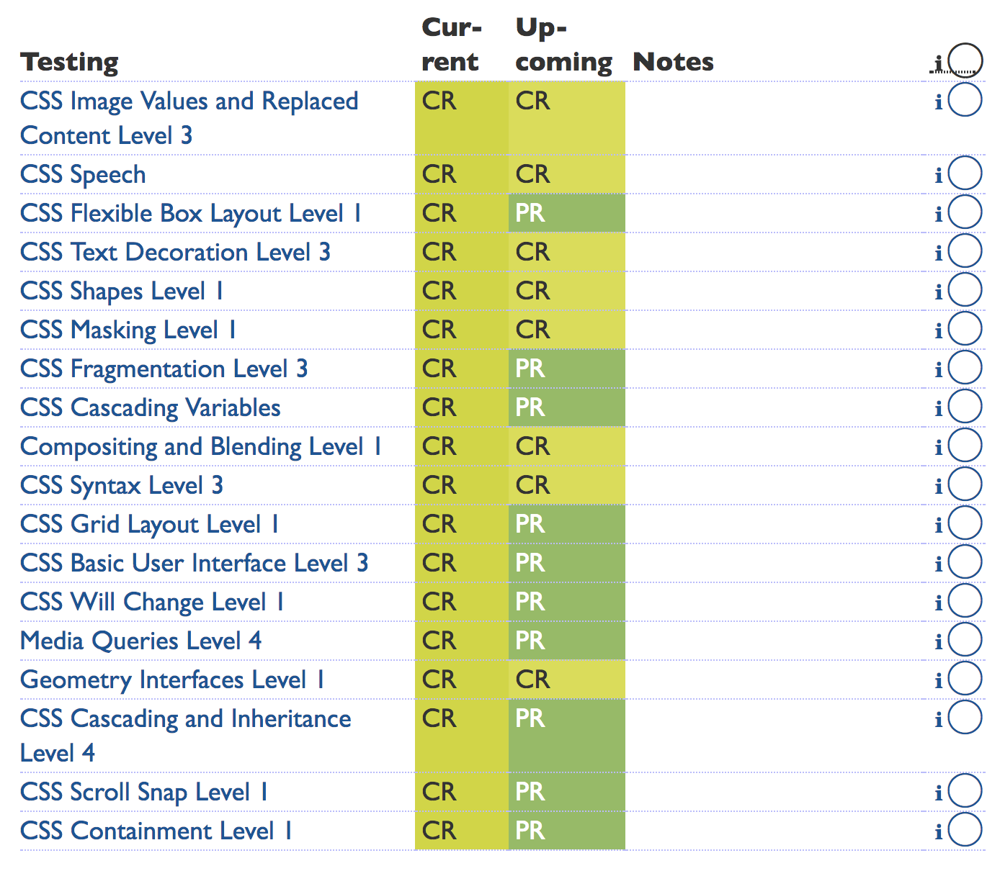
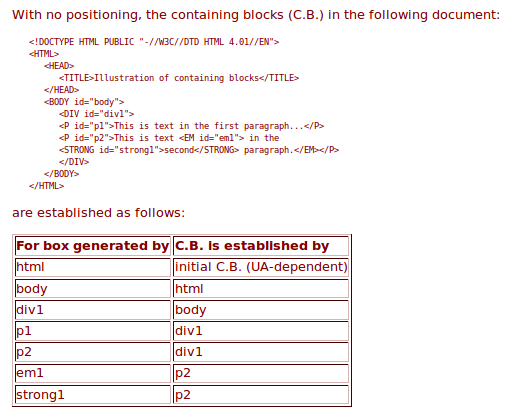

Writing CSS
Modified from slideshow by GU Yiling (original).In this lecture:
- General knowledge
- Including CSS Files
- Syntax
- Cascading
- Values & units
- Layout basics
What is CSS?
Cascading Style Sheets
(Hella) Abridged Specification History
-
CSS 1 (1996)
font, color, align, box-model, #id, .class, ... -
CSS 2 (1998)
position, z-index, media, text-shadow, ... -
CSS 2.2 (2016)
Read the Spec -
CSS 3 (Now)
Grid template layout, extended and basic box model revisions, aural style sheets (#a11y), and numerous changes to other HTML models (lists, links, @media queries, ...), etc.
Why do standards take so long?
Standards & backward compatibility
Recently Completed CSS Working Group Standards Work
Recently Stablized CSS Working Group Standards Work
Recent Testing-Phase CSS Working Group Standards Work
Recap
- Cascading Style Sheets
- Akin to any web technology, people are constantly revising it through the CSSWG standards body: CSS 1, CSS 2, CSS 2.1, CSS 3
/* questions? */
Including CSS into HTML
How?
1. <link> element
<!DOCTYPE html>
<html>
<head>
<meta charset="utf-8" />
<title>Hello World</title>
<link rel="stylesheet" type="text/css" href="style.css" />
</head>
<body>
...
USE this method.
2. <style> element
<!DOCTYPE html>
<html>
<head>
<meta charset="utf-8" />
<title>Hello World</title>
<style type="text/css">
/* ... */
</style>
</head>
<body>
...
DO NOT use this method.
3. Inline styles
<body>
<h1 style="color: red;">
Hello World
</h1>
<p style="margin: 2em 0;">
Paragraph here
</p>
</body>
DO NOT use this method.
4. @import rules
@import url(normalize.css);
@import url(layout.css);
@import url(typography.css);
nav {
position: fixed;
top: 0;
left: 0;
height: 3em;
}
DO NOT use this method.
Performs worse than the <link>!
See don’t use @import.
/* questions? */
How to write CSS
A primer
Interactive CSS Vocabulary Site
Open this and follow alongDeclarations
property: value
Declaration blocks
{ declaration; declaration; ... }
/* single-line */
{ display: block; height: 300px }
/* multi-line */
{
display: block;
height: 300px;
}Semicolons (;) are only required between declarations.
Selectors
Pattern matching against document trees
Types of Selectors
Selectors help you point to (select) specific HTML elements.
| Basic simple selectors | Examples |
|---|---|
| Type selectors | HTML tags: nav, section, header, p |
| Class selectors | HTML classes that uses dot scheme in CSS: .ds-body-img |
| ID selectors | HTML classes that uses hash scheme in CSS: #data-story-personal |
| Universal selector | Selects all-the-HTML-things: * |
| Attribute selectors | Selects HTML tag attributes: [title], [rel~="copyright"] |
| Pseudo classes | Adds a CSS-defined class to an HTML element: :hover |
Some Selection Practice
See the Pen Demo basic CSS selection by Chris Lindgren (@lndgrn) on CodePen.
Combinator Selectors
| Combinators | Example |
|---|---|
Descendent combinator (␣) |
.data-story-personal p {...} |
Child combinator (>) |
ul#resources > li {...} |
Adjacent sibling combinator (+) |
h1 + h2 {...} |
General sibling combinator (~) |
img ~ p {...} |
Practice the Descendent & Child
See the Pen Demo basic CSS selection by Chris Lindgren (@lndgrn) on CodePen.
Question: How can combinators work on the document tree?
Answer: CSS uses HTML containing block rules.

Containing blocks are established by parent box-context. (See W3C spec.)
Pop Quiz!
Based on these selectors declaration blocks, tell me how the elements will be styled.
JS Bin on jsbin.comPseudo-element Selectors
::first-line::first-letter::before::after
Pseudo-element Selectors
JS Bin on jsbin.comPseudo classes
| Type | Example |
|---|---|
| Location | :link, :visited, :target, ... |
| User action | :hover, :focus, ... |
| Tree-structural | :first-child, :nth-child(), ... |
Fun with the :nth-child() (pseudo-class)
JS Bin on jsbin.com
/* questions? */
Cascading & Inheritance
Basic Cascading Heuristic
-
Origin and importance
Where did the CSS sheet and rule come from? And what level of importance does it have?
-
Specificity
How specific is the declaration's selector? More specific selections are used over more general.
-
Last Rule / Order of appearance
Where is the declaration block declared in the stylesheet?
1. Cascading: Origins & importance
UA, user, author
and !important
See this article on "The Cascade"
2. Specificity (order based on selector types)
- ID
#main - class
.title - type
article - pseudo-class
:hover
Codepen Cascade Example
See the Pen Using the cascade in CSS by Chris Lindgren (@lndgrn) on CodePen.
Recap
- Origin/importance > specificity > order
- Author > user > UA, reversed when important
Pop Quiz!
What is the color and text-decoration of the “Go to post” anchor/link?
/* questions? */
Values and Units
15px1.25emrebeccapurple == #663399url(logo.png)- ...
Numerical Values
- Integers: integer
border-radius: 15px; z-index: 1; order: 3; - Numbers: number
line-height: 1.5; flex: 0.618; - Percentages: percentage
width: 80%; font-size: 120%;
Color Values
- Keywords
lightgreen,gold,olivedrab, etc. - Hexadecimal notation
#69c,#abcdef,#eee,#123456... - Functional notation
rgb(200, 150, 100),hsla(120, 100%, 50%, 0.5), ...
See more in CSS Color Module Level 4.
Font-Relative Length Values
(csswg spec)
-
Most commonly used:
em&rem -
Numerous others for another day:
vw,vhex,ch, etc. - Essentially, these values are computed values relative to another value declared elsewhere.
Example Use of Font-Relative Length Values
See the Pen Basic heading level hierarchies by Chris Lindgren (@lndgrn) on CodePen.
Absolute lengths
px, pt, in, cm, mm, ...
Extra tidbit: Learn about how pixels are defined -- Physical or pixel?
Resource Locators: url
body {
background: url(../img/starrynight.png);
}
Recap
- Data types: numbers, integers, lengths, colors, ...
- Length: relative vs. absolute
- Color: keywords, hex, rgb(a), hsl(a), ...
/* questions? */
Positioning Basics
Elements Defined by Flows
Here are the Normal Flow Definitions
- Block Formatting Context (cf. Duckett, p. 361)
- Inline Formatting Context (cf. Duckett, p. 361)
Review: BFC vs. IFC
Box Model
All elements have the definable properties below.

Test it out with your Inspect Element.
Positioning Schemes for Different Element Flows & Behaviors
position: default(normal)position: absoluteposition: fixedposition: relativefloat: [left, right, none]
Float positioning
Fixed vs. Absolute Positioning
- Rough main difference:
>>fixedpositions an element based on the viewport.
>>absolutepositions an element based on the closest parent containing block.
Example: fixed & absolute
See the Pen Containing blocks and position properties by Chris Lindgren (@lndgrn) on CodePen.
Recap
- Box model
-
4 position schemes:
normal flow, float, absolute, and fixed -
Coming next Tuesday:
displaybehaviors. Notably, the CSS Grid display.
Summary
- History
- Syntax
- Cascading
- Values & units
- Positioning basics
Guidelines for Writing Readable & Functional CSS
Documenting & Indexing
/**
* style.css
*
* Styles for the basic HTML5 homework.
*
* Index
* - Base
* - Header
* - Article
* - Footer (Need to write/design)
*/
Documenting Scheme with Comments
Guidelines for Ruleset Writing
- each selector on its own new line;
- a space before the opening brace (
{); - the opening brace (
{) on the same line as the last selector; - a space after the colon (
:); - each declaration on its own new line;
- each declaration indented by 2 or 4 spaces;
- a trailing semi-colon (
;) at the end of all declarations; - the closing brace (
}) on its own new line;
Guidelines for Ruleset Writing
.selector-1 {
background-color: aliceblue;
background-image: linear-gradient(white, dimgrey),
linear-gradient(black, salmon);
box-shadow: 1px 1px 1px black,
2px 2px 1px 1px salmon inset;
color: black;
font-size: 1.25rem;
padding: 15px;
}
Alphabetize Declaration Order within Ruleset
.selector-1 {
background-color: aliceblue;
background-image: linear-gradient(white, dimgrey),
linear-gradient(black, salmon);
box-shadow: 1px 1px 1px black,
2px 2px 1px 1px salmon inset;
color: black;
font-size: 1.25rem;
padding: 15px;
}
Use of Whitespace
- Adhere to ~80 characters wide rule
- Consistent whitespace; be meaningful about indentation and spaces between blocks, etc.
article p {
font-size: 1.25rem;
margin: 15px;
padding: 25px;
}
Homework: Revise your homework
With this new knowledge and guidelines in mind:
- Revise your previous homework with an HTML5 structure, if it doesn't have one already.
- Revise the CSS stylesheet with the guidelines in mind.
- Experiment with the HTML and CSS by adding and changing some of its structure and CSS/design.
- Publish it to a gh-pages website. Be prepared to share it with the class.